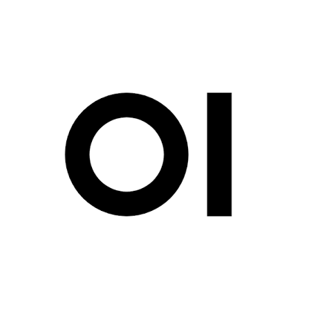
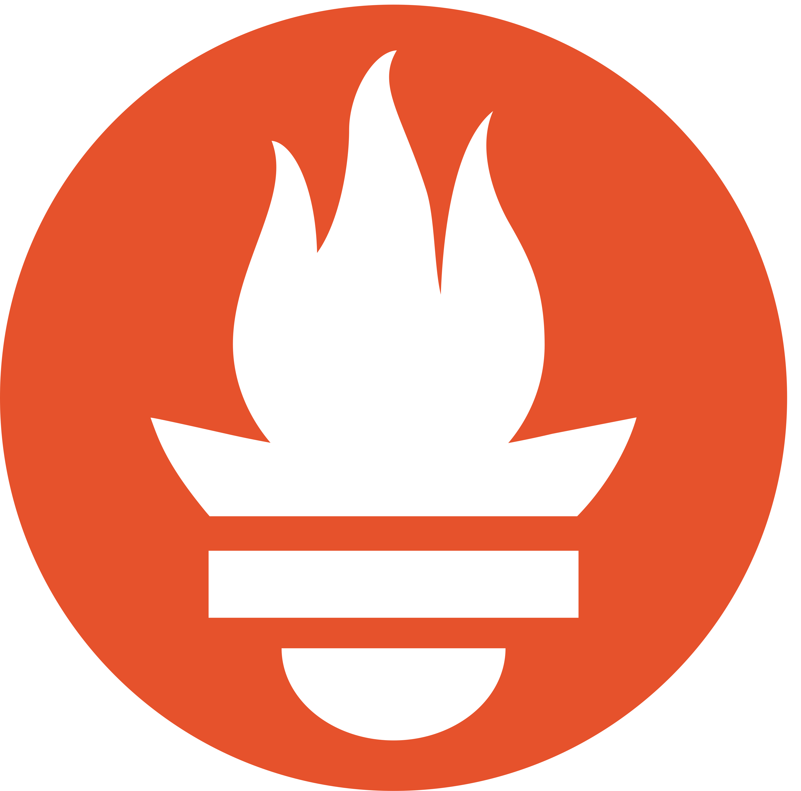
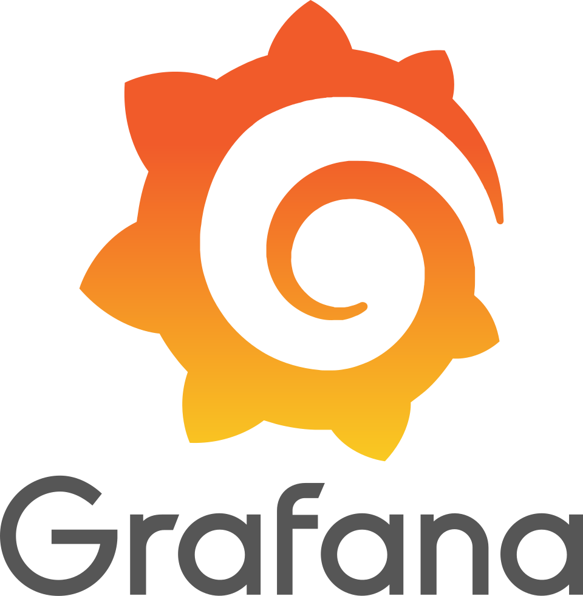
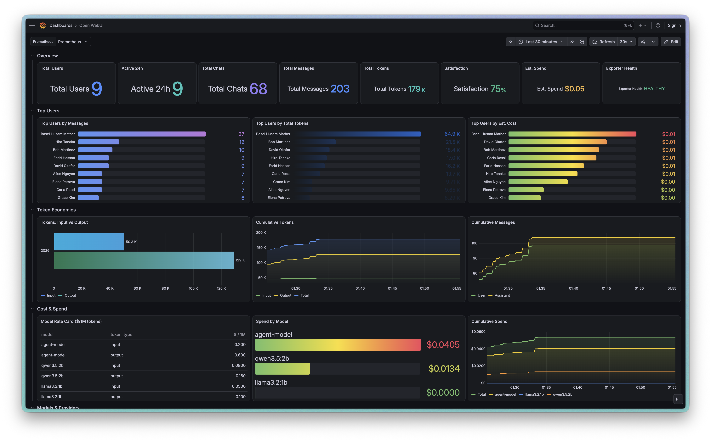
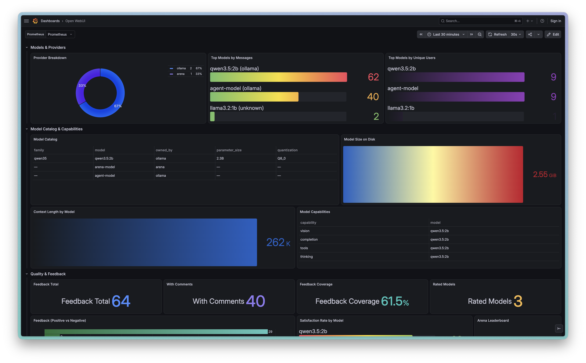
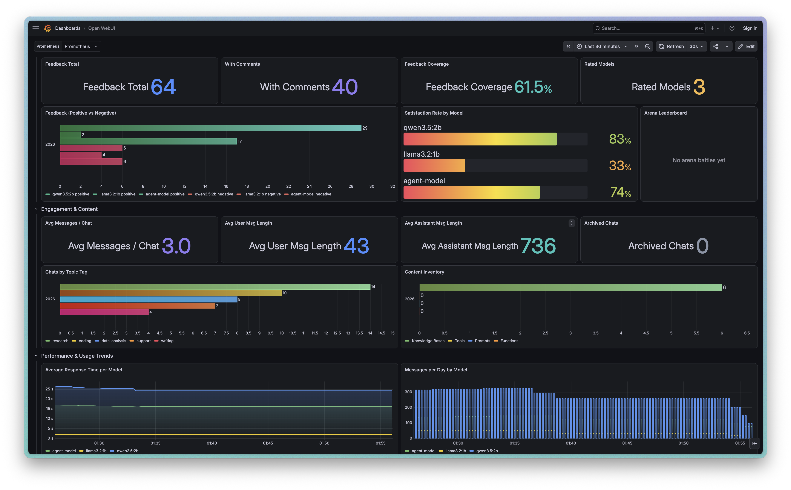

Open WebUI
metrics, exported.
Poll Open WebUI's REST API, expose it as Prometheus metrics, and chart usage, cost & performance in a ready-made Grafana dashboard.



Open WebUI has no /metrics. This fixes that.
The only other community exporter needs direct PostgreSQL access. This one talks to the REST API instead — so it works on any backend, with no database credentials.
Direct database access
- Requires PostgreSQL credentials & network reach to the DB
- Breaks on SQLite deployments
- Couples your monitoring to Open WebUI's schema
Just the REST API
- One admin API key — no database credentials
- Works with SQLite or Postgres, unchanged
- Uses built-in
/api/v1/analytics/*pre-aggregated data
Usage, cost & quality — as first-class metrics.
Every poll cycle writes users, chats, messages, tokens, per-model breakdowns, feedback and reconstructed spend into an in-memory Prometheus registry.
Poll-based, not push
A single daemon thread wakes every 30s, calls each collector once, and serves whatever the last cycle wrote to /metrics.
Collector isolation
Each collector runs in its own try/except. One dead endpoint or bad key can't crash the process or block the others.
Cost reconstruction
Open WebUI never reports price. A per-model rate table multiplies each message's token usage into estimated spend, per model and per user.
Admin-wide totals
Aggregates the admin-scoped /chats/all/db so message, tag and response-time counts are correct across every user — not just the key's own.
Ready-made dashboard
A generated 24-column Grafana dashboard ships in the box — KPIs, token economics, model catalog, feedback and spend — auto-provisioned on startup.
Seedable demo data
Scripts populate a real instance with mock users, groups, KBs, chats & feedback through the REST API — all namespaced so teardown removes exactly it.
Everything charted, out of the box.
Nine sections spanning hero KPIs, per-user leaderboards, token economics, the model catalog & capabilities, quality & feedback, and exporter self-health.



Running in four steps.
Generate an admin API key, drop it in .env, and bring the stack up. Standalone or Docker Compose — your call.
Generate an API key
In Open WebUI: Settings → Account → API Keys → Create new key. Enable it under Admin Settings if hidden.
# use an admin key — several metrics
# come from admin-wide endpointsConfigure
Copy .env.example → .env and fill in your instance URL and key.
OPENWEBUI_BASE_URL=http://localhost:3000
OPENWEBUI_API_KEY=<your key>
POLL_INTERVAL_SECONDS=30
EXPORTER_PORT=9090Run standalone
Install deps into the venv and start polling. Verify with a curl.
pip install -r requirements.txt
export $(cat .env | xargs)
python exporter.py
curl http://localhost:9090/metrics…or Docker Compose
Every stack pulls the published exporter image, no local build. docker compose up gives you the exporter alone; the monitoring file adds Prometheus and a pre-provisioned Grafana on :3001.
# Open WebUI, if you need one
docker compose -f docker-compose.openwebui.yml \
up -d
# just the exporter
docker compose up -d
# …or exporter · prometheus · grafana
docker compose -f docker-compose.monitoring.yml \
up -dPull the image directly
The exporter is published to both GHCR and Docker Hub on every release. Compose grabs it for you, but you can pull it yourself — Compose defaults to GHCR; point it at Docker Hub (or pin a tag) with EXPORTER_IMAGE.
# GitHub Container Registry (default)
docker pull ghcr.io/baselhusam/open-webui-exporter:latest
# …or Docker Hub
docker pull docker.io/baselhusam/open-webui-exporter:latest
# make the monitoring stack use Docker Hub, or pin a version
EXPORTER_IMAGE=docker.io/baselhusam/open-webui-exporter:latest \
docker compose -f docker-compose.monitoring.yml up -d
EXPORTER_IMAGE=ghcr.io/baselhusam/open-webui-exporter:v0.1.0 \
docker compose -f docker-compose.monitoring.yml up -dCost is estimated, not reported. Open WebUI exposes token counts but never prices, so pricing.py holds a per-model rate table. The local-Ollama entries are mock prices — replace them (or set MODEL_PRICES_FILE) before treating the numbers as real.
Design decisions worth knowing.
A Decoupled compose stacks
The exporter (docker-compose.yml), the full monitoring stack (docker-compose.monitoring.yml) and Open WebUI itself (docker-compose.openwebui.yml) are separate projects that never share networks or volumes. The exporter reaches Open WebUI over host.docker.internal.
B One shared HTTP wrapper
Every collector routes through get_json — a Bearer-auth session with a 5s timeout that raises on any failure, letting poll_once record the error and flip the health gauge.
C Scope-aware collection
Analytics & feedback endpoints are admin-wide; chat stats are scoped to the caller. To get true cross-user totals, the exporter aggregates the admin-wide chat dump client-side rather than trusting the scoped endpoint.
D Generated dashboard
The Grafana JSON isn't hand-edited — build_dashboard.py lays out the 24-column grid and validates there are no overlaps, so the layout stays coherent as panels change.
Point it at Open WebUI.
Watch the metrics flow.
MIT-licensed, dependency-light, and running with one command. No database credentials required.